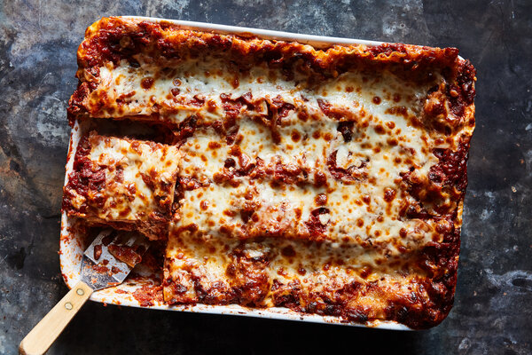

Lasagna

Description
There’s no way around it: Good lasagna is a labor of love, building deep flavor layer by layer. But the effort required on the front end pays off greatly, especially since the dish can be prepared in advance. Start with this vegan Bolognese, and half
your work is done. The rest comes together easily: Stir together a parsleyed ricotta filling, boil your noodles, assemble your lasagna and bake until bubbly and browned. Rich, creamy and deeply satisfying, this lasagna happens to be vegetarian,
but your guests will hardly know the difference.
Ingredients
- Unsalted butter, for greasing the pan
- 1 pound ricotta (about 2 cups)
- ⅓ cup finely chopped parsley, plus more for garnish
- ¼ cup heavy cream or half-and-half
- 1 large egg, beaten
- Pinch of ground nutmeg
- 3 cups shredded mozzarella (about 12 ounces)
- Kosher salt and black pepper
- 1 pound (dried) lasagna noodles (about 20 sheets)
- Olive oil, for drizzling
- 6 cups vegan Bolognese
- 1 cup finely grated vegetarian Parmesan (optional)
Directions
- Bring a large pot of water to a boil for the noodles. Heat oven to 375 degrees. Grease a 9-by-13-inch baking dish with butter. Set aside.
- While the water comes to a boil, prepare the ricotta filling: In a large bowl, stir together the ricotta, 1/3 cup parsley, cream, beaten egg and nutmeg. Fold in 2 cups mozzarella. Season with salt and pepper; set aside.
- Once the water comes to a boil, season it generously with salt, then cook the noodles just until slightly softened, about 6 minutes. (The noodles shouldn’t be fully cooked so they hold up after baking.) Transfer the cooked noodles to a colander
and rinse immediately under cold water. Drizzle with oil immediately and toss to coat to prevent sticking.
- Assemble the lasagna: Spoon about 1 cup sauce into the prepared baking dish and spread into an even layer. Top with one layer of lasagna noodles, trimming the noodles as needed. (They can overlap slightly, but should be trimmed if the overlap
is significant.) Dollop a heaping 3/4 cup ricotta mixture on top of the noodles, and spread in an even layer. Pour 1 cup sauce on top, and spread in an even layer. Repeat with 3 more layers of noodles, ricotta and sauce. Top with one final
layer of noodles, then a final layer of sauce. Sprinkle evenly with the remaining mozzarella, then the Parmesan.
- Cover the lasagna tightly with aluminum foil and bake until warmed through and bubbling, about 30 minutes. Remove foil and broil on the top rack until browned in spots, about 3 minutes.
- Sprinkle with finely chopped parsley, then let cool about 10 minutes before serving.